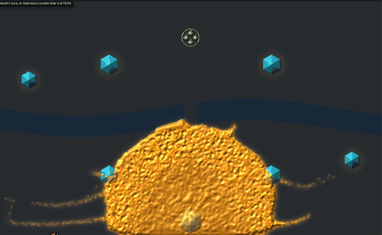
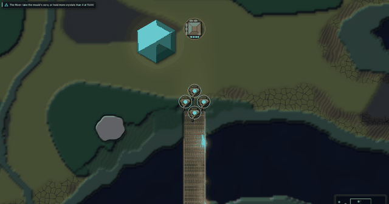

<title>Deep Water and Bridges</title>
<meta name="claude:viewport-fit-sides" content="cover">
<link rel="stylesheet" href="https://fonts.googleapis.com/css2?family=Space+Grotesk:wght@500;700&family=Inter:wght@400;600&family=JetBrains+Mono:wght@400&display=swap">
<style>
/* Layout: one reading column, films full width, counts as a small table beside each */
:root {
  --bg: #eef2f4; --fg: #15202a; --muted: #55636f; --rule: #c8d2d9; --water: #1d3f5c; --deck: #7a5c3c;
  --display: "Space Grotesk", system-ui, sans-serif; --body: "Inter", system-ui, sans-serif; --mono: "JetBrains Mono", ui-monospace, monospace;
}
@media (prefers-color-scheme: dark) { :root:not([data-theme="light"]) { --bg: #0f161c; --fg: #dde6ec; --muted: #8fa0ad; --rule: #24323d; --water: #6fa8d6; --deck: #c99a68; color-scheme: dark } }
:root[data-theme="dark"] { --bg: #0f161c; --fg: #dde6ec; --muted: #8fa0ad; --rule: #24323d; --water: #6fa8d6; --deck: #c99a68; color-scheme: dark }
body { background: var(--bg); color: var(--fg); font: 15px/1.55 var(--body); }
main { max-width: 780px; margin: 0 auto; padding-block: 32px 64px; padding-left: max(16px, env(safe-area-inset-left, 0px)); padding-right: max(16px, env(safe-area-inset-right, 0px)); display: grid; gap: 28px; }
h1, h2 { font-family: var(--display); text-wrap: balance; margin: 0; }
h1 { font-size: 2rem; }
h2 { font-size: 1.2rem; }
p { margin: 0; max-width: 65ch; }
section { display: grid; gap: 12px; }
img { width: 100%; height: auto; border-radius: 6px; border: 1px solid var(--rule); }
.lede { color: var(--muted); }
table { border-collapse: collapse; font-variant-numeric: tabular-nums; width: 100%; }
td, th { text-align: left; padding: 6px 10px 6px 0; border-bottom: 1px solid var(--rule); vertical-align: top; }
th { font-weight: 600; }
.wrap { overflow-x: auto; }
code { font-family: var(--mono); font-size: 0.9em; }
.k-deep { color: var(--water); font-weight: 600; }
.k-deck { color: var(--deck); font-weight: 600; }
.note { color: var(--muted); font-size: 0.92rem; }
</style>
<main>
  <header style="display:grid;gap:10px">
    <h1>Deep water and bridges</h1>
    <p class="lede">The first new ground kinds for Larder World, 2026-11-14. Soldiers can't enter <span class="k-deep">deep water</span>, the slime crawls through it slowly, and shots fly over it. Shallow water is a ford and a <span class="k-deck">bridge</span> carries both sides, so the crossings are where the fights happen.</p>
  </header>

  <section>
    <h2>What each ground does</h2>
    <div class="wrap"><table>
      <tr><th>Ground</th><th>Slime</th><th>Soldiers and buildings</th><th>Shots</th></tr>
      <tr><td class="k-deep">Deep water</td><td>0.2 of its plain step; no child is born there</td><td>Can't stand or build; paths walk round to a crossing</td><td>Fly over</td></tr>
      <tr><td>Ford (shallow)</td><td>0.5 of its step (unchanged wet)</td><td>Walk across</td><td>Fly over</td></tr>
      <tr><td class="k-deck">Bridge</td><td>Plain pace</td><td>Walk across</td><td>Fly over</td></tr>
    </table></div>
  </section>

  <section>
    <h2>The River, idle squad, 5 to 150 s</h2>
    
    <p>The River map, version 2 (<code>map=river</code>, also in the menu), on main with the terrain thread's water and plank materials. The river's course and width wander. A dark deep channel sits inside a lighter shallow margin, with sand and clay banks. There are two long shallow fords with sand bars, plus a pond, a creek and a plank bridge. Seed 1, shape C, nobody playing. Counts from the film: walkers 24,962 at 15 s, 22,383 at 90 s and 21,057 at 150 s. The idle squad fired 76 shots and killed 124. Crystals left: 0.967 at 150 s.</p>
  </section>

  <section>
    <h2>A rush, close in, 2 to 16 s</h2>
    
    <p>The rush hand sends the squad at the core: its path goes over the bridge, the nearest crossing, and never into the deep. It fired 38 shots and killed 501 walkers before the squad fell at 12 s on the slime's own bank.</p>
  </section>

  <section>
    <h2>What's checked</h2>
    <p>A soldier sent across a river crosses only on the ford or bridge and never stands in deep water; a bullet flies its whole leg across water; walkers in deep water drift less than 0.7 as far as on wet ground and none is born there. The GPU engine matches the CPU for one tick on soil bands that include deep water (1,053 walkers in it, 0 off). The map editor has Deep (7) and Bridge (8) brushes and warns when water cuts the landing off a crystal or nest.</p>
    <p class="note">The films were re-made at 20:18Z on main, after #285 and the terrain thread's #292 had merged. The first version of this page showed the flat stand-in look the owner rejected at 18:01Z.</p>
  </section>
</main>
